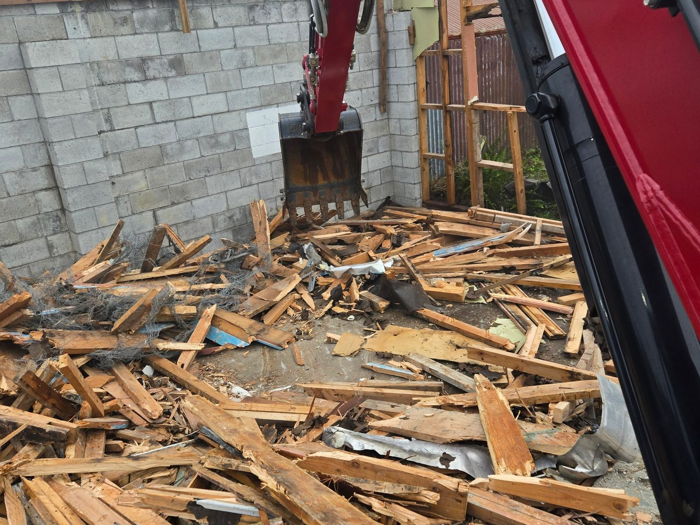
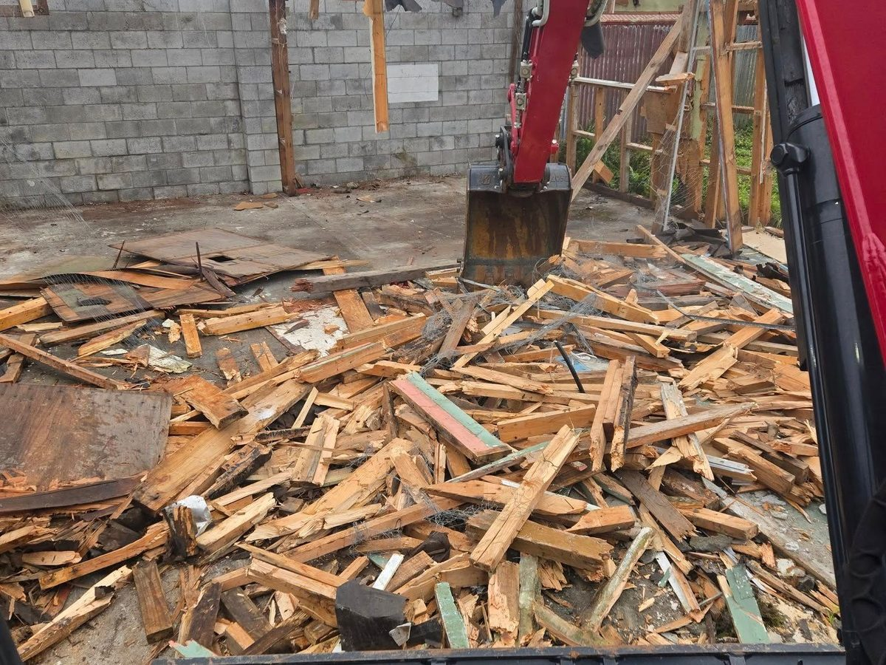
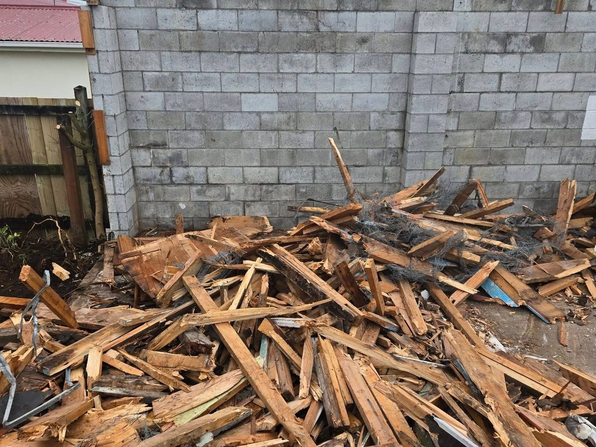
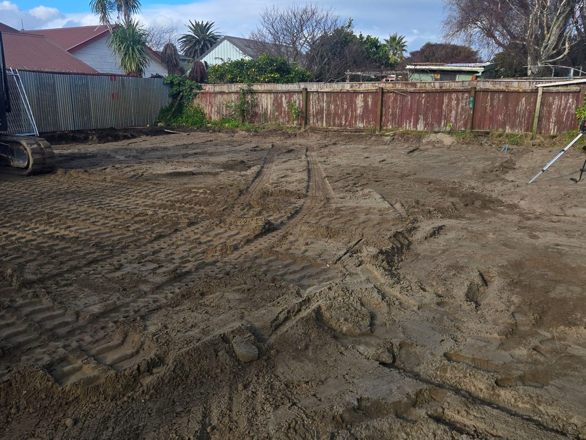

Houses, garages, sheds, old slabs and decks. Taken down with our own diggers, carted away in our own trucks, and the site left clean and level for whatever comes next.

Photo · Garage demolition, PoriruaMost of our demolition is residential, and most of it is the first step of something new: a driveway, a rebuild or a section make-over. We do the demolition and, if you want, the job that comes after.
These are the two things that can stop a demolition job, so we deal with them first.
Services are disconnected beforehand, and the plan is agreed with you, so the day itself runs to schedule.
Site secured, beforeUdig plans checked, and power, gas and water confirmed off.
Anything reusable or recyclable pulled out first, so less goes to the tip.
Our digger brings it down and loads it straight into our trucks.
Footings and slabs out if agreed, ground graded, site left clean.
Size, construction, access and whether there's asbestos are what decide the price.
Around $32k for many Wellington homes. Size, construction and access set the final number.
Done by a licensed asbestos remover before demolition starts.
Indicative Wellington-region ranges for 2026, GST inclusive. Not a quote. Tip fees are passed through at cost. Your written quote is fixed.

Photo · Garage demolition
Photo · Old slab break-out
Photo · Cleared & levelled siteOur demolition is done by the same crew that builds the driveways, walls and landscaping that often come next. Here's what homeowners say about them.
“Porirua Hardscapes did an amazing job on our driveway. The attention to detail and quality of work are unmatched. Highly recommend them!”
“Adam and the team completely restored my faith in tradesmen. They delivered a perfect product, under budget.”
“The exposed aggregate job they completed at my home is nothing short of spectacular. From the first conversation Adam made everything feel easy and transparent, and the three walk-throughs meant we were always aligned.”
Featured in BuildHub's 2026 guide to the best concrete contractors in Wellington.
Fully demolishing a detached building of up to three storeys is exempt from building consent (Building Act Schedule 1, exemption 30). Partial demolition, or taking down something attached to another building, may need consent. We check before we quote.
Buildings from before 2000 need an asbestos refurbishment or demolition survey before work starts (WorkSafe guidance). If asbestos is found, it must be removed by a licensed asbestos remover before demolition goes ahead. It's priced as a separate line so you can see exactly what it adds.
As an indicative guide, a typical house demolition in the Wellington region costs $27,000–43,000, around $32,000 for many homes. Asbestos removal is extra, typically $80–200 per m². GST inclusive and not a quote. Garages, sheds and slabs are priced on site.
Yes. We load and cart the waste in our own trucks and keep clean material like soil and concrete separate from mixed waste where we can, which keeps tip fees down. Tip fees are passed through at cost. The site is left clean and level.
Yes. Garages, sheds, old decks and concrete slabs are a big part of our demolition work. Often it's the first step of a bigger job, like clearing an old garage slab before a new driveway goes down.
Call Adam, or send a few details and photos and we'll call you back today.